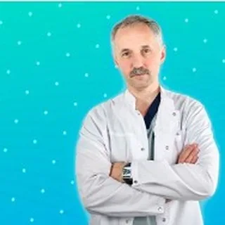
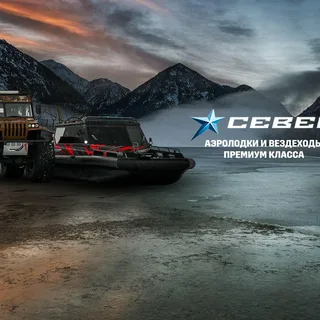
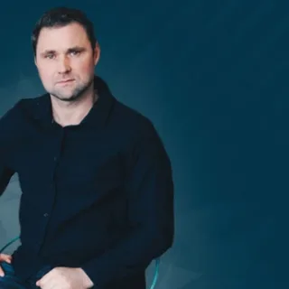

01
СММ и маркетологи
Зарабатывайте от 200 000 руб./мес. как Youtube-продюсер и эксперт по видеомаркетингу
Средний чек продюсера - от 60 - 90 тыс.р. с клиента 3-4 клиента обеспечат вас доходом от 200 000 р/мес.
Агентство видеомаркетинга
Для кого →Зарабатывайте от 200 000 руб./мес. как Youtube-продюсер и эксперт по видеомаркетингу
Средний чек продюсера - от 60 - 90 тыс.р. с клиента 3-4 клиента обеспечат вас доходом от 200 000 р/мес.
Развивайте личный бренд, привлекайте от десятков тысяч до миллионов подписчиков, лояльной адутории к своему бренду
Зарабатывайте со своими клиентами в 2-3 раза больше
Экспертиза в видеомаркетинге расширит спектр ваших компетенций и услуг. Вы можете сконцентрироваться на 3-4 постоянных клиентах и получать доход не только от производства, но и от продюсирования каналов
Масштабируйте свой бизнес, привлекайте русскоязычную аудиторию к своему бренду по всему миру
Выстроим для вас стратегию рзавития бренда через видеомаркетинг, обучим команду, настроим бизнес процессы по созданию контента и ведении платформ

Результаты каналов, с которыми работала команда WVM.
450 000 подписчиков и 44 млн. просмотров Более 200 видео и 1000 шортс За 4 года работы

Более - 20 заявок на покупку премиальной техники в месяц - 50 видео снятых в 20 регионах страны - 4 млн. просмотров
800 000 просмотров и 2 000 подписчиков За 5 недель работы на новом канале
Более 1,2 млн новых подписчиков За время сопровождения канала

12 700+ подписчиков и 1,2 млн просмотров Более 60 видео Канал создан с нуля
450 000 подписчиков и 44 млн. просмотров Более 200 видео и 1000 шортс За 4 года работы
Выберите подходящий вариант, чтобы обсудить программу и условия обучения.